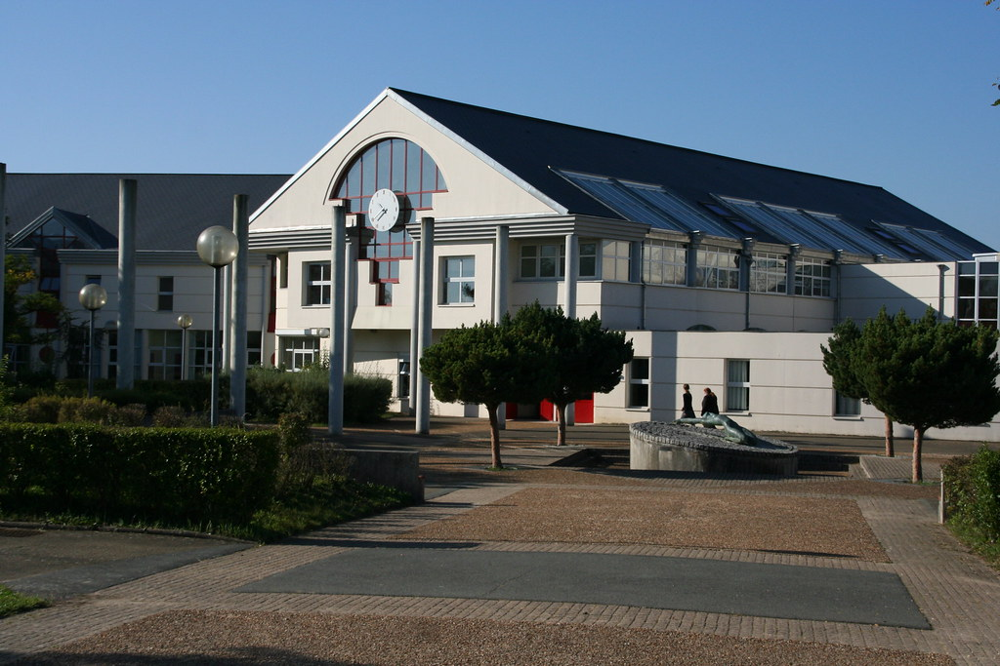
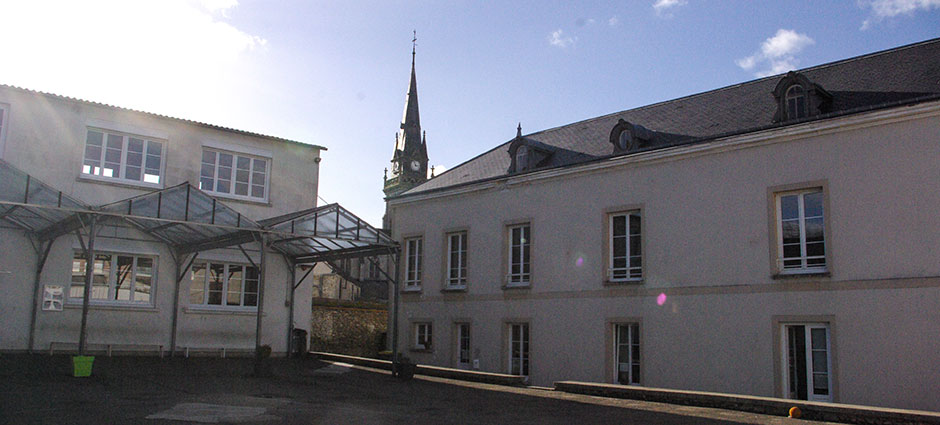
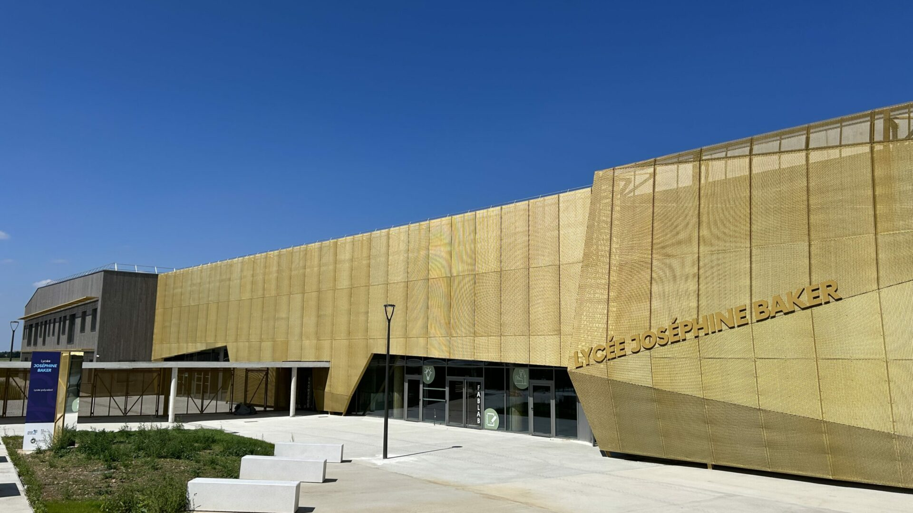

Mon Parcours
Collège Catherine de Vivonne
Rambouillet - 78120C'est ici que mon parcours scolaire a débuté. J'y ai passé mes premières années de collège jusqu'au milieu de la classe de 4ème.
C'est durant cette période, à Rambouillet, que ma curiosité pour l'informatique et ma passion pour la musique ont commencé à s'affirmer.

Collège Privé Saint-Joseph
Auneau - 28700Début 2023, j'ai pris un nouveau départ en intégrant le collège Saint-Joseph à Auneau pour y terminer mon cycle secondaire.
Ce changement d'établissement m'a permis de gagner en autonomie, de décrocher mon brevet et de valider mon projet d'orientation vers les technologies du numérique.

Lycée Joséphine Baker → Bac Pro CIEL
Hanches - 28130Aujourd'hui, je me spécialise au lycée Joséphine Baker dans la filière CIEL (Cybersécurité, Informatique et réseaux, Électronique).
C'est le cœur technique de mon profil : ce que j'y apprends en gestion des réseaux, en informatique et en électronique me donne les clés parfaites pour maîtriser l'architecture d'un studio, le hardware et les logiciels de MAO (Musique Assistée par Ordinateur).
